Networks¶
This module contains all relevant functions to generate networks.
API¶
MLP that implements the local reparametrization trick¶
The module probabilisic.gauss_mlp contains a MLP reimplementation that
implements the local reparametrization trick as described in
Kingma et al., “Variational Dropout and the Local Reparameterization Trick”, 2015. https://arxiv.org/abs/1506.02557
-
class
networks.gauss_mlp.GaussianMLP(n_in=1, n_out=1, hidden_layers=[10, 10], activation_fn=ReLU(), use_bias=True, no_weights=False, init_weights=None, verbose=True)[source]¶ Bases:
hypnettorch.mnets.MLPMulti-layer-perceptron with fully-factorized Gaussian weight posterior.
This class assumes that the weight posterior is a fully-factorized Gaussian, such that the local reparametrization trick can be applied. Hence, assuming a batch size
 , a layer input size of 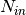 and a layer
output size of 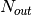 a linear layer performs the following
operation
, a layer input size of 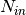 and a layer
output size of 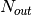 a linear layer performs the following
operation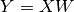
with inputs 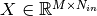, weights 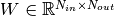 and outputs 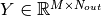.
Elements in
 are expected to arise from the following factorized
Gaussian
are expected to arise from the following factorized
Gaussian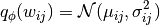
As shown by Kingma et al., the variance of the likelihood estimator will decrease to zero with increasing batch size if a different weight sample is drawn for every sample in the mini-batch.
They show a more computational efficient solution is to sample activations, which follow the following factorized Gaussian given the above weight posterior
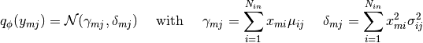
Hence, we can simply sample activations using the above distribution and the reparametrization trick
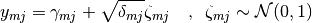
What about bias vectors 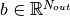? We can easily incorporating them in the above formulas, by just assuming that we append an additional column to
 containing ones and an additional row to
containing the bias vector. In this case, the formulas become
containing ones and an additional row to
containing the bias vector. In this case, the formulas become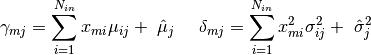
where we assume that 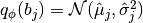.
Note
This class will not hold mean and variance weights (even though, it is exoected that they are passed to the
forward()). Therefore, we recommend using an instance of this class always wrapped by classprobabilistic.gauss_mnet_interface.GaussianBNNWrapper.- Parameters
(...) – See constructor documentation of class
mnets.mlp.MLP.
-
forward(x, mean, rho, logvar_enc=False, mean_only=False, sample=None, rand_state=None)[source]¶ Compute the output
 of this network given the input
of this network given the input
 by drawing a different weight sample for every sample in the
input batch.
by drawing a different weight sample for every sample in the
input batch.This is achieved by using the local reparametrization trick.
- Parameters
(...) – See docstring of method
mnets.mlp.MLP.forward(). We provide some more specific information below.mean (list) – The set of mean parameters. The shapes of the tensors are expected to follow attribute
mnets.mnet_interface.MainNetInterface.param_shapes.rho (list) – The set of
 parameters. The shapes of the
tensors are expected to follow attribute
parameters. The shapes of the
tensors are expected to follow attribute
mnets.mnet_interface.MainNetInterface.param_shapes.logvar_enc (bool) – See docstring of function
probabilistic.prob_utils.decode_and_sample_diag_gauss().mean_only (bool) – If
True, the hidden activation will simply be set to .
.sample (optional) – If a specific weight sample is provided, the local raparametrization trick will be disabled and the super class
forwardmethod will be called where the sample is passed as argumentweights.rand_state (torch.Generator, optional) – This generator would be used to realize the reparametrization trick (i.e., the activation sampling), if specified. This way, the behavior of the forward pass is easily reproducible.
- Returns
The output of the network.